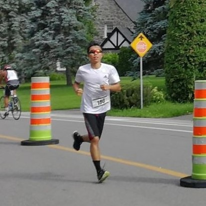

Race4Climate is a movement where people run, swim and bike to raise awareness for climate change.
Our goal is to reach a total of 40 000 km (size of the Earth), where we will host a massive event to donate funds to support humanitarian projects in climate disaster areas (currently for the Red Cross).
Race4Climate is not for profit.
You ask people to donate for climate change relief efforts.
For every 10$ you receive, you vow to swim 500m, run 1km or bike 10km.
The funds will go to The Red Cross' relief efforts in climate disaster torn regions for humanitarian aid, up on our GoFundMe fundraiser.
Race4Climate will be posting updates on Facebook on when funds will be delivered and how they are used.
You can help raise funds by running for climate awareness! Just fill out this 30 second form (click here!) to register.
Next, be sure to share Race4Climate's GoFundMe so that people can donate.
Aditionally, to have your distance added to our collective total, please email us proof of having completed your distance (screenshot of running app or photo of event) to race4climate@gmail.com
Don't forget to share your proud race moments with #race4climate.
You can donate to our official GoFundMe fundraiser for climate disaster relief (click here!).
You decide when to run your race, though the sooner it is the better in order to gain momentum for Race4Climate.
Any distance is good, whether it is a 1km bike ride or an IRONMAN 70.3. We recommend you set a fundraising goal for your race, like as for every 10$ donated on your behalf you run 1 km.
This started in August 2019 when a 17 year-old teenager from Montreal, Canada decided to run an Ironman 70.3 (113 km triathlon) to raise awarenes and funds for climate disaster relief.
The movement then spread to people of all ages and backgrounds, with the ultimate goal of assuring rapid response in climate related emergencies and in supporting environmental causes and movements across the Earth.
Race4Climate
Email: race4climate@gmail.com
Facebook: Race4Climate
Laurence Liang (the 17 year-old who started it all)
Email: laurencel2001@gmail.com
Facebook: Laurence Liang
LinkedIn: Laurence Liang